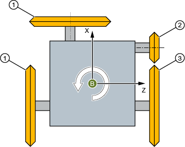
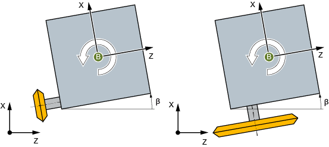
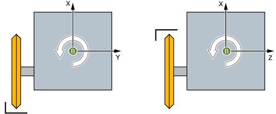

Rundschleifmaschinen mit B-Achse werden mittels Toolcarriern unterstützt.
① | Außenschleifscheibe |
② | Innenschleifscheibe |
③ | Planschleifscheibe |
Beispiel: Revolver mit 4 Schleifspindeln
Toolcarrier
Dabei wird für jede vorhandene Schleifspindel ein eigener Toolcarrier eingerichtet. Jeder Toolcarrier hat eine Kopfkinematik mit der B-Achse als 1. Rundachse. Als 2. Rundachse wird eine halbautomatische Rundachse in Richtung der Schleifspindel eingerichtet (Werte: 0° oder 180°).
Über den Offsetwinkel der B-Achse wird die jeweilige Grundstellung bestimmt (z.B. 0°, 90°, 180°, 270°, beliebig). Wenn eine Spindel mechanisch etwas schräg zu den 90°-Richtung steht (z.B. 3°), so wird der Richtungsvektor der 2. Rundachse entsprechend schräg eingegeben (die Richtungskomponente Y muss aber = 0 sein).
Im "T-,S-,M-Fenster" wählen Sie den passenden Toolcarrier.
| | Maschinenhersteller Beachten Sie hierzu bitte die Angaben des Maschinenherstellers. |
Ausrichtwinkel "Beta"
Über β haben Sie die Möglichkeit, eine Verdrehung gegenüber der Grundstellung zu definieren.

Beta-Drehung (B-Achse)
Schneidenlage wechseln
Mit Hilfe des Auswahlfelds „Bearbeitung gegenüber" wird die 2. Rundachse gesteuert und über die Funktion CUTMOD die Schneidenlage gewechselt (z.B. beim Innenschleifen).
Bearbeitung gegenüber = nein | Bearbeitung gegenüber = ja |